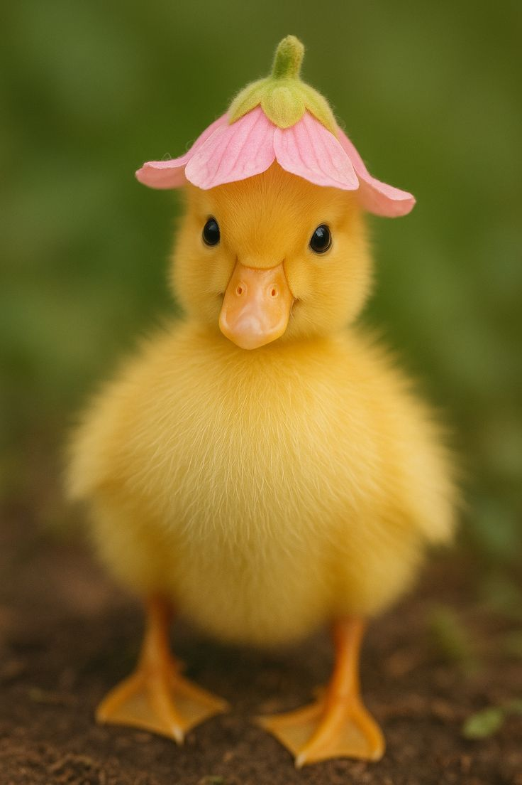
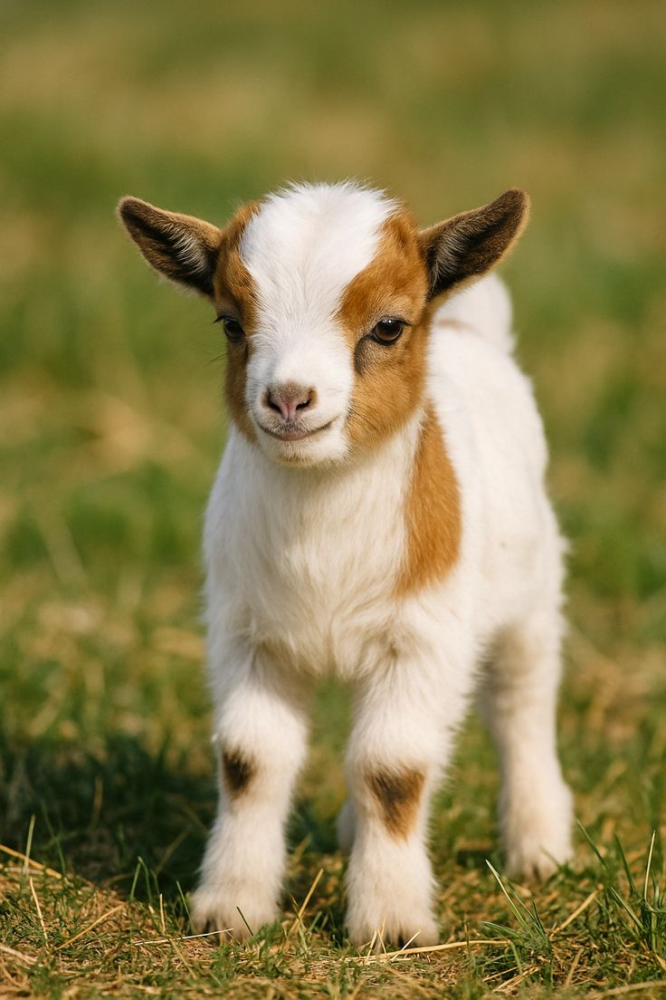

The animals mentioned are common pets and domesticated creatures that people often keep at home. They are known for their friendly nature and are often used for companionship, work, and entertainment. Here's a brief overview of each:
Dogs: Known for their loyalty and companionship, dogs come in various breeds and are often used for protection and companionship.
Cats: Valued for their independence and playful nature, cats are popular pets that provide emotional support and companionship.
duck: Ducks are versatile aquatic birds belonging to the family Anatidae, characterized by their broad, flat bills and webbed feet, and they play significant roles in various ecosystems.
goat: Goats are domesticated, herbivorous mammals known for their intelligence, agility, and versatility in agriculture.